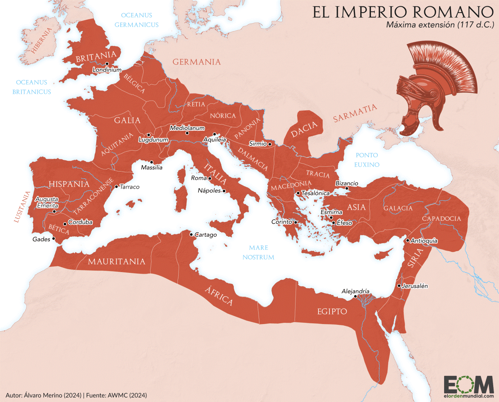
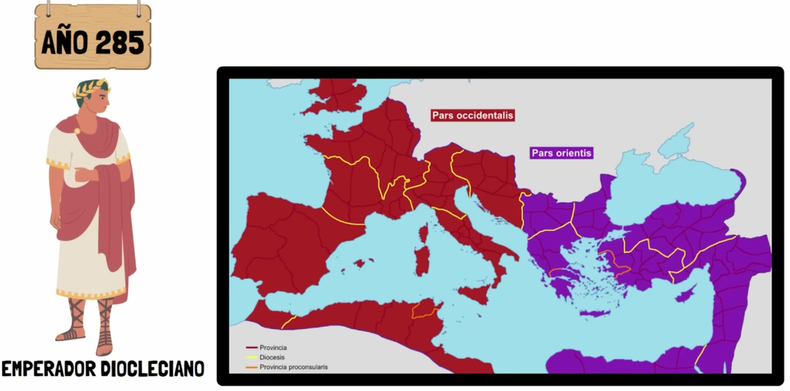

0. Introducción al tema
Para entender correctamente este primer tema, es necesario primero contextualizar la situación que nos presenta el libro. Para ello realizaremos un viaje en el tiempo, recorriendo algunas de las fechas mas importantes.
Para que te hagas una idea, este era el tamaño del imperio romano, años antes de su caída:

Todas estas tierras estaban unidas bajo una misma unidad política (el Imperio), con una lengua (el latín), leyes y formas de vida comunes. Una misma moneda que facilitaba los intercambios y una red de ciudades y calzadas unía el vasto imperio, dividido en dos mitades (Oriente y Occidente)
Sin embargo, mantener un imperio tan grande, traía consigo numerosos problemas para su gestión y mantenimiento. Para evitar la caída del mismo en el año 285 el emperador Diocleciano, decidió dividir el imperio en dos mitades:

Una occidental y otra oriental. De esta manera, permitiría un mejor control del mismo (en vez de que fuera solamente una persona el que gobernara todo el imperio, ahora habría dos personas, una en cada parte).